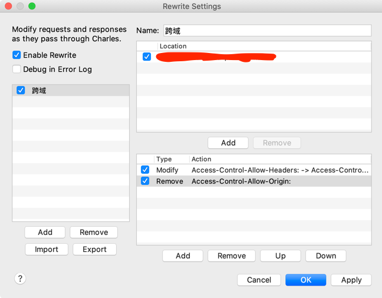

官方文档指路
https://www.charlesproxy.com/documentation/
阅读指南：内容本身是比较简单的，如果需要的话，可以安装chrome 的 Google 翻译插件，点击翻译此页面，整个文档就被翻译了（需要开代理，不然可能用不了）
问题解决
- charles 突然打开就是一片空白
这个时候把电脑的shadowsocks代理给关掉了就好了
- 怎么修改请求
在需要拦截的请求上面右击，选择breakpoints，再次抓到请求的时候，就会拦截，这个时候可以修改请求了（request， response都能改，先抓到的是options，然后是post请求）
（cmd + shift +4 截屏）
按Execute就会继续往下走
- 配置APP预发环境测试的请求抓取
为了解决跨域问题，需要做下面的配置

- Rewrite Settings
- enable rewrites
- Rewrite Rules
- Modify Header(Access-Control-Allow-Headers)
- Remove Header(Access-Control-Allow-Origin)
1 | Access-Control-Allow-Headers |
https://www.jianshu.com/p/75126f57e933
具体手机端的配置见上面链接里面的文档
基本原理-手机端
Charles - 代理软件 - SSL/流量控制/重发，修改请求等
手机通过电脑进行网络访问，因而，电脑的host设置，对手机的请求也有效（移动端配置host要root权限）；离线发布时候，可以把请求直接映射到某个服务器
- 手机和电脑同一网络环境
- Charles - proxy - proxy settings - proxies
- 勾选 enable transparent http poxying ， 端口号设置
- 手机代理设置： 端口号和电脑设置的保持一致
https请求抓取
- 原理，Charles对客户端伪装成服务器，对服务器伪装成客户端
- Help -> 添加Charles的根证书
设备上下载完证书，点击证书，如果提示到设置里面安装，则可以在设置里面全局搜索：“证书”｜“安装证书”，就可以找到安装的地方了； - 问题解决：https://blog.csdn.net/liushaofang/article/details/106421834
host
- Tools
- Map Remote Settings
- 选择enable map remote
- Add
- (记得选择 Preserve host in header fields)
1
2
3
4
5502 Bad Gateway
The proxy server received an invalid response from an upstream server. Sorry for the inconvenience.
Please report this message and include the following information to us.
Thank you very much!
如果不选择，会有相关报错
http://proxy.man/ssl
电脑端
-
手机端：
ip + 端口号 进行wifi代理配置
安装证书 http://proxy.man/ssl
设置里面搜索 => 可信
postman
- 可发可抓
- https://learning.postman.com/docs/sending-requests/capturing-request-data/capturing-http-requests/
Proxy
- macos proxy -> 设置为系统代理
- switchyomega 指定网页的代理服务为Charles（把端口改成 proxy settings 里面显示的端口）
- switchomega -> auto switch
- ssl proxying (https - 证书里的公钥加密请求，私钥加密响应数据) - 抓明文数据，把证书换成Charles的 - ssl proxying settings - help-ssl proxying-install charles root certificate
- breakpoints(修改内容，然后再execute)
- start throttle ｜ throttle settings
- web interface settings - 通过web网页控制，用于远程的时候，比较方便
- external proxy settings - 设置转发的代理服务器，这样Charles抓包之后会再转发给别的代理服务器，用于科学上网也需要代理服务器的场景
Tools
- no cache -> 会用本地的缓存，但是每次都协商
- block cookies
- map remote
- map local - 线上调试本地代码（替换静态资源） 或者mock数据（map local | local path）
- mirror - 把响应内容保存在本地 可配合map local 使用
- rewrite
- block list - 模拟请求失败
- allow list
- DNS spoofing - 类似于修改hosts，终端生效可以通过 export https_proxy=127.0.0.1:8888 export http_proxy=127.0.0.1:8888 , 当然ping 不会走代理，终端去代理可以用 unset https_proxy http_proxy
- client process - 在notes里面显示发送请求的客户端进程
- compose new - 有点像postman了；右键compose也可以编辑发送
- repeat - 重发请求（advanced repeat）- 用来测试接口
View
- 左下角 - filter
- Focused hosts
- 右键focus
- highlight rules - 类似于 chrome devtools里面的has0response-header filter
Edit
参考阅读
- https://mp.weixin.qq.com/s?__biz=Mzg3OTYzMDkzMg==&mid=2247492108&idx=1&sn=525ad9bf283055d39d3c528ab1c94419&chksm=cf032d37f874a421d64bcc10e70393c8a90f97a26e4b9c4e71fd0311748e49032c6494f9bad5&token=965494574&lang=zh_CN#rd
- 用 Charles 断点调试 HTTPS 请求，原理揭秘